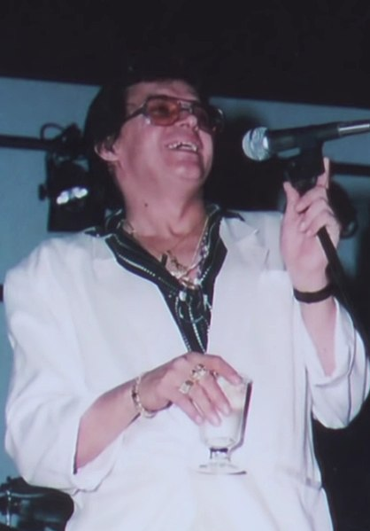

| Imagen | Video | Tabla | ||||
|---|---|---|---|---|---|---|
|  |
|
Héctor Juan Pérez Martínez (Machuelo Abajo, Ponce; 30 de septiembre de 1946-Queens, Nueva York; 29 de junio de 1993), 11 conocido artísticamente como Héctor Lavoe, fue un cantautor y productor musical puertorriqueño de salsa. Es una de las más grandes figuras de la salsa y ayudó a establecer la popularidad de dicho género a nivel mundial en las décadas de los sesenta, setenta, ochenta, y comienzos de los noventa.12
Desde 1967 hasta 1986, estuvo integrado en la orquesta de Willie Colón, con la que logró el reconocimiento con canciones como «Aguanile», «Che Che Colé», «La murga», «El día de suerte», «Todo tiene su final», «Aires de Navidad», «Juana Peña», «Juanito Alimaña», «Triste y vacía», «¿De qué tamaño es tu amor?», «Calle Luna, Calle Sol», «Barrunto», «Timbalero», «Abuelita», entre otras.